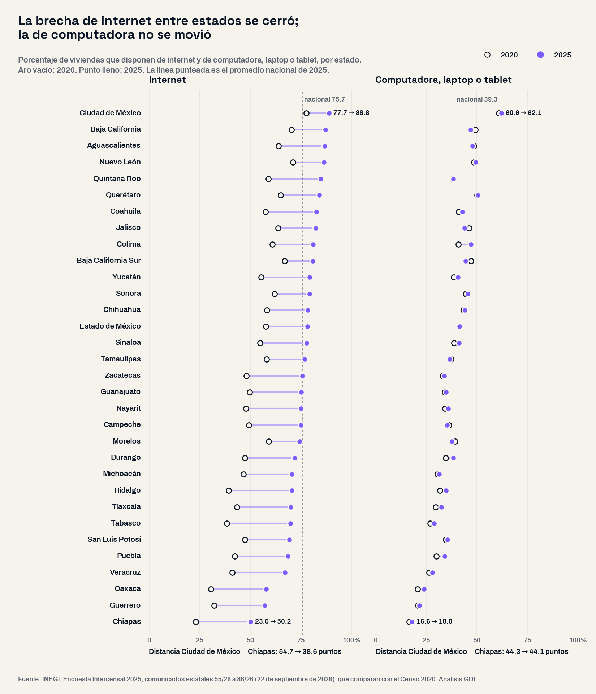
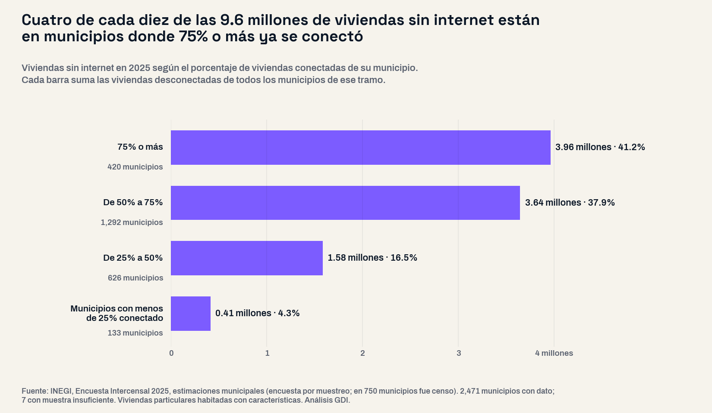

Este análisis partió de una pregunta abierta: ¿dónde se cerró y dónde se abrió la brecha de internet en las viviendas entre 2020 y 2025, y qué tienen en común los territorios que se quedaron atrás? Se ordenaron los 32 estados y los 2,478 municipios de la Encuesta Intercensal 2025 por su proporción de viviendas con internet, computadora y celular, sin agruparlos de antemano, y se compararon con el Censo de Población y Vivienda 2020. La pobreza, la población indígena y el tamaño de cada municipio se leyeron después, como columnas aparte.
Contexto: la misma pregunta, cinco años después
El INEGI levantó la Intercensal del 6 de octubre al 14 de noviembre de 2025 con una muestra de poco más de 7.3 millones de viviendas; en 750 municipios aplicó el cuestionario a todas. Según el marco conceptual de la encuesta, la pregunta sobre tecnologías de la información es la misma del Censo 2020 y mantiene su orden; solo se quitaron dos opciones que este análisis no usa (servicios de video por internet de paga y consola de videojuegos): el cambio no viene de cómo se preguntó. Mide si en la vivienda se dispone de cada tecnología, no quién la usa ni con qué calidad.
Radiografía: internet llegó a 30 millones de viviendas
De 2020 a 2025 la proporción de viviendas con internet pasó de 53.9% a 75.7%: 21.8 puntos en cinco años. Son unos 30.0 millones de viviendas conectadas, más de 11 millones más que en 2020, y las que no tienen internet bajaron de más de 16 millones a 9.6 millones. El celular, que ya era casi universal, subió de 88.1% a 94.5%. El avance llegó a casi todo el territorio: en 2020, 15 estados tenían internet en menos de la mitad de sus viviendas; en 2025, Chiapas es el más bajo, con 50.2%. Con el criterio más estricto, el alza es clara en 2,387 de los 2,449 municipios que se pueden comparar con 2020. Tabasco (+31.4) e Hidalgo (+31.2) avanzaron más de 31 puntos; la Ciudad de México, que partía más arriba, 11.1 puntos.

Alerta 1: la brecha de computadora no se movió
La computadora no acompañó a internet. La proporción de viviendas con computadora, laptop o tablet pasó de 38.4% a 39.3%, y la distancia entre la Ciudad de México (62.1%) y Chiapas (18.0%) quedó prácticamente igual: 44.3 puntos en 2020 y 44.1 en 2025. Como el número de viviendas creció más rápido que el de computadoras, hoy hay unos 24.0 millones de viviendas sin computadora, contra casi 22 millones en 2020. Por cada vivienda que sumó una computadora, unas cinco sumaron internet.
En 7 estados la proporción con computadora bajó; en Baja California (49.3% → 47.0%), Baja California Sur, Jalisco y Morelos la caída queda fuera del margen de error de la Intercensal. En 1,541 de los 2,449 municipios comparables no subió de forma clara, y de los 55 municipios con más de 150 mil viviendas, en 44 no cambió de forma significativa y en 4 bajó: Tijuana, Ecatepec, Guadalajara y Guadalupe (Nuevo León). Hay al menos 14.4 millones de viviendas con internet y sin computadora, laptop ni tablet: su conexión pasa por el teléfono celular u otro aparato, con lo que eso implica para hacer una tarea escolar, llenar un formulario largo o trabajar a distancia.
Alerta 2: 133 municipios siguen fuera
En 133 municipios, menos de una de cada cuatro viviendas tiene internet. Viven ahí 2.1 millones de personas en 506 mil viviendas; en 94 de ellos la Intercensal fue censo, así que la cifra es exacta, y en el resto el coeficiente de variación es menor a 15%. Se concentran en Oaxaca (51), Chiapas (24), Puebla (15), Guerrero (12) y Veracruz (10). Tienen en común lo que muestran sus columnas: mediana de pobreza de 90.7% en 2020, mediana de 94.3% de población indígena y 6.6 años de escolaridad. El celular sí llegó (mediana de 80.1% de viviendas); la computadora, a 5.3%. Chanal, en los Altos de Chiapas, es el municipio con menor proporción del país: 2.8% de sus viviendas, contra 0.3% en 2020.
La pobreza, por sí sola, no separa a los que se conectaron de los que no. De los 459 municipios que en el Censo 2020 tenían internet en menos de 10% de sus viviendas, 96 pasaron de la mitad en 2025 y 99 siguen debajo de 25%. Los dos grupos tienen pobreza y población indígena parecidas (medianas de 87.0% y 92.1% de pobreza; 91.5% y 94.5% indígena). Los que siguen fuera ya tenían menos celular en 2020 (mediana de 49.9% contra 57.2%). Los datos no permiten atribuir la diferencia a una causa: obligan a revisar cada caso.
| Municipio | Estado | Viviendas, 2025 | Internet, 2020 | Internet, 2025 | Celular, 2025 | Computadora, 2025 | Pobreza, 2020 |
|---|---|---|---|---|---|---|---|
| Chanal | Chiapas | 2,503 | 0.3% | 2.8% | 82.5% | 1.6% | 99.1% |
| Rincón Chamula San Pedro | Chiapas | 1,954 | 2.5% | 3.6% | 82.9% | 1.7% | 97.9% |
| Ñuu Savi | Guerrero | 2,365 | — | 4.1% | 63.0% | 0.9% | — |
| Sitalá | Chiapas | 3,850 | 3.1% | 4.7% | 28.8% | 1.1% | 97.2% |
| Chalchihuitán | Chiapas | 4,386 | 1.1% | 5.4% | 55.1% | 1.1% | 98.9% |
| Santa María Ixcatlán | Oaxaca | 168 | 16.6% | 5.4% | 66.7% | 3.6% | 95.9% |
| Santos Reyes Yucuná | Oaxaca | 311 | 1.6% | 5.8% | 83.3% | 1.0% | 97.8% |
| San Lucas Camotlán | Oaxaca | 859 | 0.6% | 6.8% | 79.2% | 1.8% | 99.0% |
| San Juan Cancuc | Chiapas | 8,232 | 0.6% | 7.5% | 72.7% | 0.8% | 99.3% |
| San Pedro Ixcatlán | Oaxaca | 2,866 | 4.7% | 9.0% | 79.7% | 6.8% | 88.9% |
Los diez municipios con menor proporción de viviendas con internet en 2025; en los diez la Intercensal fue censo. Ñuu Savi se creó después de 2020 y no tiene dato del Censo. Internet, celular y computadora: INEGI, Censo 2020 y Encuesta Intercensal 2025. Pobreza: medición municipal de 2020.
Alerta 3: la mitad de la brecha está donde vive la mayoría
La desconexión no está solo en los municipios más rezagados. La mitad de los 9.6 millones de viviendas sin internet está en 227 municipios que concentran 64% de todas las viviendas del país; 85 de ellos tienen más de 100 mil viviendas. 41.2% de todas las viviendas desconectadas están en municipios donde 75% o más ya tiene internet, y solo 4.3% en los 133 municipios más rezagados. Entre los municipios con más viviendas sin internet están León (unas 91 mil), Ecatepec (84 mil) e Iztapalapa (84 mil). Son estimaciones de encuesta: entre ellos la diferencia no es significativa. Un programa que solo mire porcentajes deja fuera a la mitad de las viviendas desconectadas.

| Estado | Internet, 2020 | Internet, 2025 | Cambio, puntos | Computadora, 2020 | Computadora, 2025 | Cambio, puntos | Viviendas sin internet, 2025 |
|---|---|---|---|---|---|---|---|
| Chiapas | 23.0% | 50.2% | +27.2 | 16.6% | 18.0% | +1.4 | 760,576 |
| Guerrero | 32.1% | 57.1% | +25.0 | 20.9% | 21.6% | +0.7 | 426,152 |
| Oaxaca | 30.6% | 57.9% | +27.3 | 20.8% | 24.0% | +3.2 | 522,443 |
| Veracruz | 41.1% | 67.1% | +26.0 | 26.4% | 28.0% | +1.6 | 834,527 |
| Puebla | 42.3% | 68.6% | +26.3 | 30.1% | 34.1% | +4.0 | 610,609 |
| San Luis Potosí | 47.4% | 69.3% | +21.9 | 34.7% | 35.6% | +0.9 | 261,633 |
| Tabasco | 38.4% | 69.8% | +31.4 | 27.0% | 28.9% | +1.9 | 233,166 |
| Tlaxcala | 43.4% | 69.9% | +26.5 | 29.7% | 32.6% | +2.9 | 116,773 |
| Hidalgo | 39.3% | 70.5% | +31.2 | 31.9% | 34.9% | +3.0 | 295,198 |
| Michoacán | 46.7% | 70.5% | +23.8 | 30.6% | 31.5% | +0.9 | 424,939 |
| Durango | 47.3% | 72.0% | +24.7 | 34.6% | 38.5% | +3.9 | 158,107 |
| Morelos | 59.1% | 74.3% | +15.2 | 39.3% | 37.7% | −1.6 | 159,517 |
| Campeche | 49.2% | 74.9% | +25.7 | 36.3% | 35.4% | −0.9 | 73,034 |
| Nayarit | 47.8% | 74.9% | +27.1 | 34.4% | 36.0% | +1.6 | 102,291 |
| Guanajuato | 49.6% | 75.2% | +25.6 | 34.2% | 34.9% | +0.7 | 447,175 |
| Zacatecas | 48.1% | 75.7% | +27.6 | 33.3% | 33.9% | +0.6 | 121,156 |
| Tamaulipas | 58.1% | 76.8% | +18.7 | 37.3% | 36.6% | −0.7 | 267,543 |
| Sinaloa | 54.8% | 77.8% | +23.0 | 38.8% | 41.3% | +2.5 | 210,621 |
| Estado de México | 57.7% | 78.2% | +20.5 | 41.4% | 41.5% | +0.1 | 1,138,164 |
| Chihuahua | 58.2% | 78.4% | +20.2 | 43.4% | 44.1% | +0.7 | 271,285 |
| Sonora | 62.0% | 79.2% | +17.2 | 44.5% | 45.5% | +1.0 | 203,700 |
| Yucatán | 55.3% | 79.3% | +24.0 | 38.6% | 40.7% | +2.1 | 160,376 |
| Baja California Sur | 67.0% | 80.8% | +13.8 | 47.1% | 44.4% | −2.7 | 59,192 |
| Colima | 60.8% | 81.0% | +20.2 | 40.9% | 47.2% | +6.3 | 48,021 |
| Jalisco | 63.8% | 82.2% | +18.4 | 46.3% | 44.0% | −2.3 | 467,431 |
| Coahuila | 57.4% | 82.6% | +25.2 | 41.0% | 42.8% | +1.8 | 178,682 |
| Querétaro | 65.0% | 84.0% | +19.0 | 50.1% | 50.6% | +0.5 | 127,615 |
| Quintana Roo | 59.0% | 84.7% | +25.7 | 38.1% | 38.4% | +0.3 | 107,908 |
| Nuevo León | 71.1% | 86.4% | +15.3 | 48.6% | 49.4% | +0.8 | 263,487 |
| Aguascalientes | 63.9% | 86.8% | +22.9 | 48.6% | 47.8% | −0.8 | 59,243 |
| Baja California | 70.3% | 87.1% | +16.8 | 49.3% | 47.0% | −2.3 | 167,982 |
| Ciudad de México | 77.7% | 88.8% | +11.1 | 60.9% | 62.1% | +1.2 | 338,586 |
| Nacional | 53.9% | 75.7% | +21.8 | 38.4% | 39.3% | +0.9 | 9,615,838 |
Ordenado de menor a mayor proporción de viviendas con internet en 2025. Filas sombreadas: estados donde la proporción con computadora bajó fuera del margen de error de la Intercensal. Porcentajes: INEGI, comunicados estatales de la Encuesta Intercensal 2025 (55/26 a 86/26), que comparan con el Censo 2020. Viviendas sin internet: estimación de la Intercensal.
Datos complementarios
La conexión se mudó al teléfono. Entre 2020 y 2025 la línea telefónica fija bajó de 37.7% a 31.8% de las viviendas, la televisión de paga de 43.5% a 35.9% y el aparato para oír radio de 69.2% a 54.4%. En el comercio local se nota la misma distancia: según el DENUE de mayo de 2026, en 236 de los 494 municipios con menor proporción de viviendas conectadas no hay registrado un solo comercio de teléfonos celulares. Y, como documentamos en septiembre, la Intercensal también mostró que 698 municipios perdieron población entre 2020 y 2025.
Implicaciones para la gestión pública
1. Diseñar los trámites para el celular. Al menos 14.4 millones de viviendas tienen internet y no tienen computadora. Un trámite municipal o estatal que solo funciona bien en una pantalla grande no llega a ellas.
2. Atender la brecha de dispositivos. En Chiapas, Guerrero y Oaxaca menos de una de cada cuatro viviendas tiene computadora. Bibliotecas, casas de cultura y centros comunitarios con equipo y horario amplio son infraestructura social que un ayuntamiento sí puede operar.
3. Conectar el núcleo de 133 municipios. Ahí la conectividad no llegó sola. Necesita coordinación entre el municipio, el estado y la federación, con metas medidas en la próxima Intercensal y en el Censo 2030.
4. No olvidar a las ciudades. La mitad de las viviendas sin internet está en 227 municipios donde vive la mayoría de la población, con coberturas que ya parecen altas. Ahí la brecha se mide por colonia, no por municipio.
5. Ponerlo en el plan de desarrollo. La Intercensal 2025 da el dato de cada municipio con su margen de error. Nuestra guía del plan municipal de desarrollo explica cómo construir el diagnóstico con fuentes oficiales.
Conclusión
En cinco años, internet llegó a más de 11 millones de viviendas y la distancia entre el estado más y el menos conectado se redujo 16 puntos. La computadora no se movió, y por eso hoy hay más viviendas sin ella que en 2020. Lo que queda por conectar tiene dos caras: 133 municipios con pobreza alta donde la conexión no llegó, y millones de viviendas en municipios grandes que ya parecen conectados. Para estados y municipios la pregunta cambió: ya no es solo cuántas viviendas tienen internet, sino con qué se conectan y quién quedó fuera.
¿Qué tan conectadas están las viviendas de tu municipio?
En la plataforma de GDI puedes consultar el internet, la computadora y el celular de las viviendas de tu municipio según la Intercensal 2025, junto con la pobreza, las finanzas públicas municipales y la proyección de población de CONAPO, para diagnosticar tu territorio con fuentes oficiales integradas.
Explorar mi territorioPreguntas frecuentes
¿Cuántas viviendas tienen internet en México?
75.7% de las viviendas particulares habitadas en 2025, unos 30.0 millones, según la Encuesta Intercensal 2025 del INEGI. En 2020 eran 53.9%.
¿Qué estado tiene menos internet en las viviendas?
Chiapas, con 50.2% de sus viviendas en 2025 (23.0% en 2020). La Ciudad de México tiene la proporción más alta: 88.8%.
¿Cuántas viviendas tienen computadora?
39.3% en 2025, unos 15.6 millones, contra 38.4% en 2020. Unos 24.0 millones de viviendas no tienen computadora, laptop ni tablet.
¿Qué municipio tiene menos internet?
Chanal, Chiapas: 2.8% de sus viviendas en 2025, según la Intercensal, que en ese municipio fue censo. 133 municipios tienen internet en menos de 25% de sus viviendas.
Datos técnicos
Fuentes: INEGI, Encuesta Intercensal 2025: reporte de resultados 37/26 y comunicados estatales 55/26 a 86/26 (22 de septiembre de 2026), estimaciones municipales con su intervalo de confianza de 95% y coeficiente de variación, y marco conceptual de la encuesta (2026); INEGI, Censo de Población y Vivienda 2020, principales resultados por localidad (ITER); medición de pobreza municipal 2020; INEGI, DENUE 05/2026 (clase 466212). Todo se consultó en la capa de datos validada de Lokus, excepto los comunicados del INEGI.
Método: por estado y nacional se usan los porcentajes de 2020 y 2025 que publica el INEGI. Por municipio, 2025 es la estimación de la Intercensal y 2020 el conteo del Censo (ITER), cuyo denominador son las viviendas particulares habitadas con características. A nivel estatal ese conteo queda entre 0.3 puntos arriba y 5.4 puntos abajo del 2020 que usa el INEGI. Por eso un cambio municipal solo se considera claro si supera el intervalo de 95% de 2025 en 6 puntos o más; para computadora se corrige el conteo con la diferencia de su estado. Se comparan 2,449 municipios: quedan fuera los 9 creados después de 2020 y los 13 de los que se separaron. Ningún municipio con coeficiente de variación mayor a 15% entra a un ranking.
Advertencias metodológicas: la Intercensal es una encuesta por muestreo, salvo en 750 municipios donde fue censo; las cifras de viviendas sin internet son estimaciones. La pregunta mide si la vivienda dispone de internet, no la velocidad, el tipo de conexión ni quién lo usa. Que una vivienda tenga internet y no computadora no dice qué aparato usa: puede ser el celular, una televisión u otro. La pobreza es de 2020 y se lee como columna aparte; no se combina con la Intercensal en un indicador. El análisis no atribuye causas: describe lo que muestran los datos.
Clasificación SCIAN: 517 telecomunicaciones; 466212 comercio al por menor de teléfonos y otros aparatos de comunicación.
Nota: el análisis partió de una pregunta abierta y del universo completo de estados y municipios ordenado por la proporción de viviendas con internet; los grupos y el patrón emergen de los datos, no de una clasificación previa.
Análisis: GDI — Gobierno Digital e Innovación · Fecha de análisis: 13 de noviembre de 2026 · gobiernodigitaleinnovacion.com